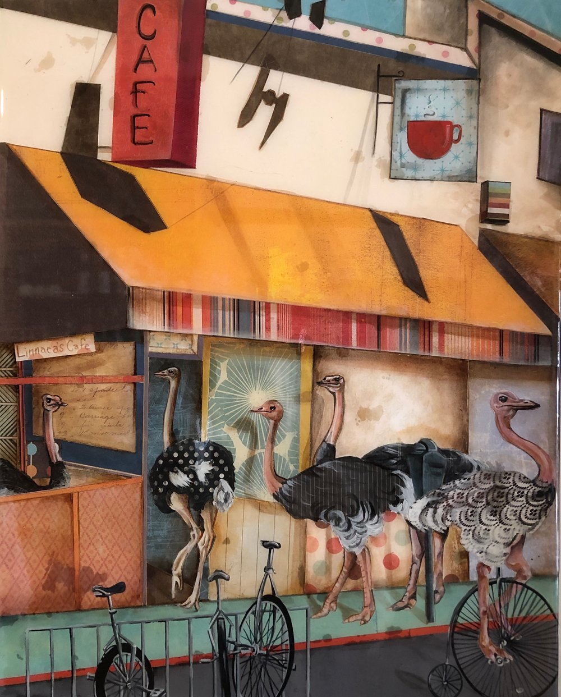
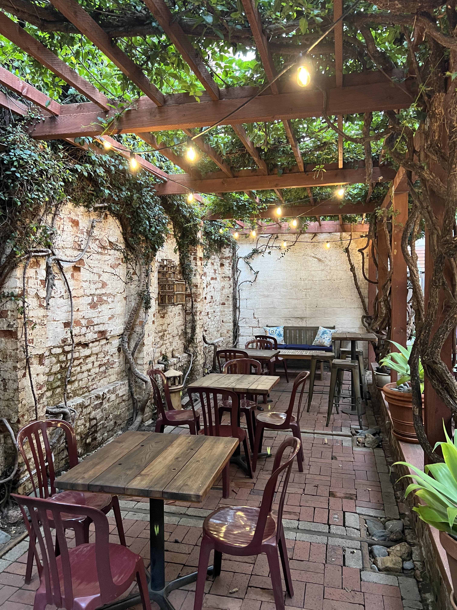
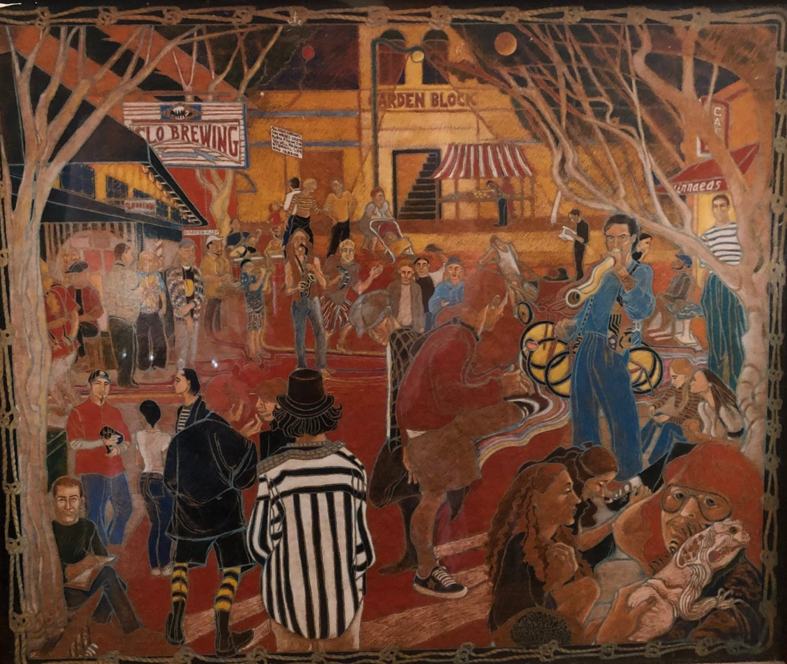

History

It all began in 1984 when Linnaea Phillips created a gathering place for conversation, music, social events, and, of course, sharing good food and drink. With the help of many friends, her vision of a classic coffee house became a reality, and one of the first 2nd wave coffee establishments on the West Coast was born. Almost 40 years later, Linnaea's Cafe is still a beloved fixture of downtown San Luis Obispo and a popular place for both locals and out-of-towners.
In 2008, Linnaea sold the café to her longtime manager, Marianne Orme, and
in 2023, Linnaea's was sold to husband-wife duo Alex and Rusty Quirk. Rusty, a Cal
Poly Graduate and Michelin Guide-recognized pastry chef, and Alex, a SLO-local musician
and event producer, have dedicated themselves to restoring Linnaea’s as the eclectic and welcoming
center of San Luis Obispo’s coffee house culture. Linnaea’s remains a popular showcase for
rising local artists and host to a variety of musical performances, poetry readings, art
installations, jazz jams, and other events.
The Garden

The Garden has been around since the cafe was founded in 1984. It became a community
project when Linnaea asked friends and customers to bring in a brick or two to help build
the patio floor. You can still see the signed, decorated blocks here and there, reminding
us that we're all in this together--that we have the power to create community and a
beautiful space for us all to enjoy and benefit from.
The Garden has been around since the cafe was founded in 1984. It became a community
project when Linnaea asked friends and customers to bring in a brick or two to help build
the patio floor. You can still see the signed, decorated blocks here and there, reminding
us that we're all in this together--that we have the power to create community and a
beautiful space for us all to enjoy and benefit from.
One of our favorite things is to watch people discover the patio garden behind the coffee
shop itself. They usually sound something like this: "Oh, wow, would you look at this!
Amazing! It's so pretty. And there's a fish pond! No way!"
People spend many a lovely hour out back in the garden, sipping lattes, catching up with
friends, studying, or doing creative work in the quiet, serene space. The resident sparrows
and finches come and go among the dense branches of the tropical arbor, cleaning up any
muffin crumbs and taking little splash baths in the koi pools.
Our Town
